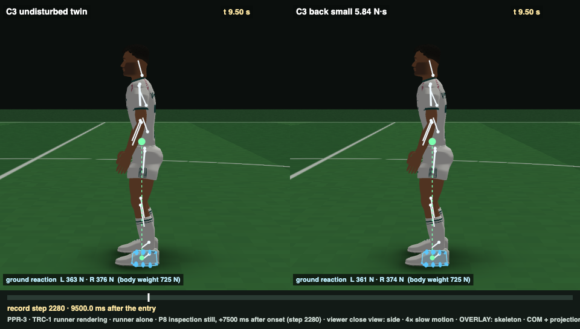

| support distance d | zero-delay limit | human-fraction band (0.50–0.70) | |
|---|---|---|---|
| Human anatomy (toes load; dynamic COP reach) | ≈ 150 mm (CoPmax 153; toe tip 145–185) | ≈ 37–47 N·s | ≈ 19–27 N·s (Robert extrapolation 20.5 ± 3.3) |
| V2 rigid flat foot (body: loadable sole edge) | 80.29 mm | 20.30 N·s | 10.15–14.21 |
| V2 boot rocker (ruled not legitimate) | 102.95 mm | 26.03 N·s | 13.01–18.22 (old B2M band) |
| Controller C3 (measured) | envelope 64.8 mm (conservative) | — | 12.09 N·s = 0.595 of the body's flat-sole limit; physical limit 12.13; never loads the tip |
| B2M | B2F | ||
|---|---|---|---|
| U1 | ✓ | ✓ | |
| U2 | ✓ | ✓ | |
| U3 | ✓ | ✓ | |
| U4 | ✓ | ✓ | |
| U5 | ✓ | ✓ | |
| U6 | ✓ | ✓ | |
| P1 | ✓ | ✓ | |
| P2 | ✓ | ✓ | |
| P3 | ✓ | ✓ | |
| P4 | ✓ | ✓ | |
| P5 | ✓ | ✓ | |
| P6 | ✓ | ✓ | |
| P7 | ✓ | ✓ | |
| P8 | ✗ | ✗ | back small 0.287 (≤ 0.26) |
| M1 | ✓ | ✓ | |
| T1 | ✗ | ✓ | fwd 12.09 N·s · B2M band 13.01–18.22 → B2F band 10.15–14.21 |
| DET | ✓ | ✓ |
| t (s) | 0.3 | 1 | 2 | 3 | 4 | 5 | 6 | 7.5 | 9 | 10.5 | 11.5 |
|---|---|---|---|---|---|---|---|---|---|---|---|
| C3 | 16.49 | 7.32 | -0.82 | -4.24 | -2.88 | 0.51 | 1.26 | 4.17 | 1.78 | -0.48 | -1.04 |
| noise off | 16.63 | 7.92 | -0.94 | -5.76 | -3.8 | -0.23 | 0.89 | 2.51 | 1.51 | 0.44 | -0.75 |
| noise off, integrals held | 16.63 | 7.91 | -0.19 | -5.63 | -5.8 | -4.54 | -5 | -3.9 | -3.2 | -2.55 | -2.45 |
Human response: complete in 2–3 s (Rietdyk 1999). C3: a ≈ 9 s slow oscillation. With every integral held and noise off, a slow decay (τ ≈ 9 s).
| variant | back small | back moderate | fwd small |
|---|---|---|---|
| C3 as frozen | 0.287 | 0.232 | 0.05 |
| motor noise off | 0.361 | 0.245 | 0.025 |
| AP COM integral held from onset | 0.243 | 0.19 | 0 |
| every controller integral held from onset | 0.27 | 0.258 | 0 |
| noise off + every integral held (memoryless controller) | 0.364 | 0.281 | 0 |
| AP prediction off | 0.431 | 0.311 | 0.077 |
| direction-specific muscle constants off | 0.357 | 0.253 | 0.031 |
| body diagnostic: M1b persistent strain arm removed | 0.477 | 0.35 | 0.149 |
| body diagnostic + noise off + integrals held | 0.59 | 0.419 | 0 |
| BALANCE-1 B | 0.609 | 0.49 | 0.284 |
Feet move < 0.1 mm versus the twin. Where the 5.7 mm lives (memoryless controller, t = 4 s, contribution to the COM offset, mm):
| pelvis 0.26 | abdomen 0.88 | thorax 1.51 | head 1.03 | arms 0.99 | thighs 0.64 | shanks 0.05 | feet 0 |
| DEV case | C3 | H1: hip map repaired, P/D only | Href: full repair, existing gains (reference) |
|---|---|---|---|
| fwd.5@24 | os 0.045 | os 0.169 | os 0.171 |
| fwd.10@24 | os 0.000 | not settled · os 0.000 | not settled · os 0.000 |
| back.6@24 | os 0.311 | os 0.455 | os 0.439 |
| back.12@24 | os 0.223 | not settled · os 0.310 | not settled · os 0.299 |
| left.12@24 | os 0.046 | os 0.043 | os 0.043 |
| fwd.12@12 | not settled · os 0.000 | not settled · os 0.000 | not settled · os 0.000 |
| thr fwd / back (100 ms) | 12.42 / 21.09 | 12.42 / 21.66 | 12.42 / 21.09 |
+0.3 s: peak backward excursion
+2.9 s: the scored trough (4.8 mm forward, ≈ 1° trunk lean): not visible at viewing scale

+7.5 s: the opposite swing of the slow oscillation
Report: balance2/BALANCE2_B2F_P8_REPORT.md · criterion: balance2/BALANCE2_FLAT_SOLE_CRITERION.md · diagnosis: balance2/p8/P8_DIAGNOSIS.md · successor log: balance2/c4/C4_DESIGN_LOG.md · L1 pass, L2 pass